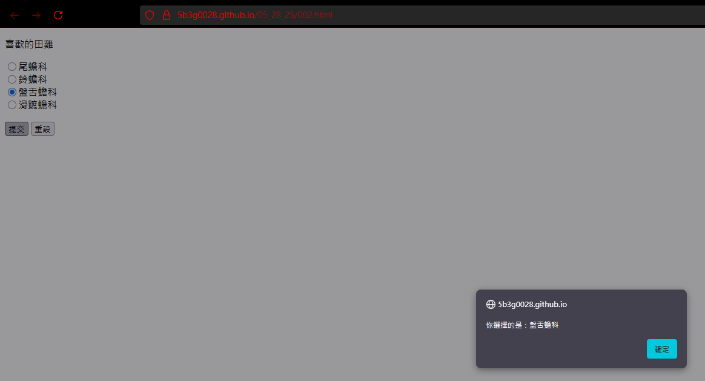
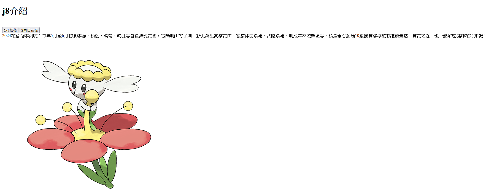
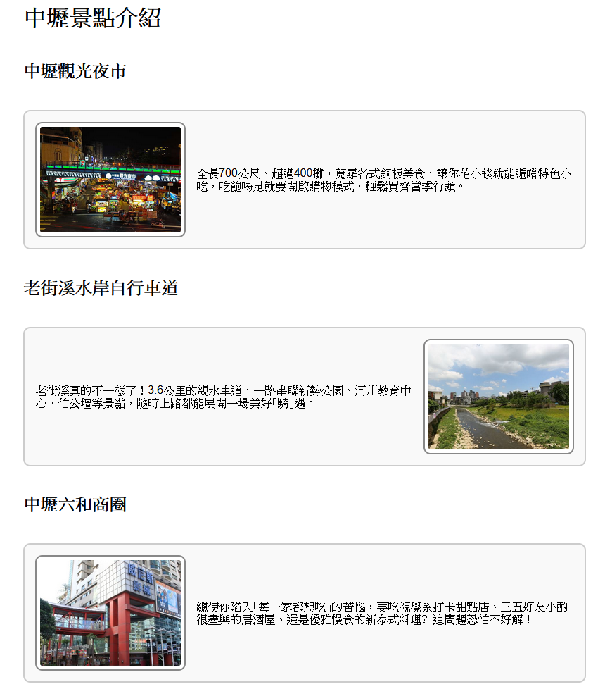
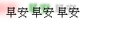
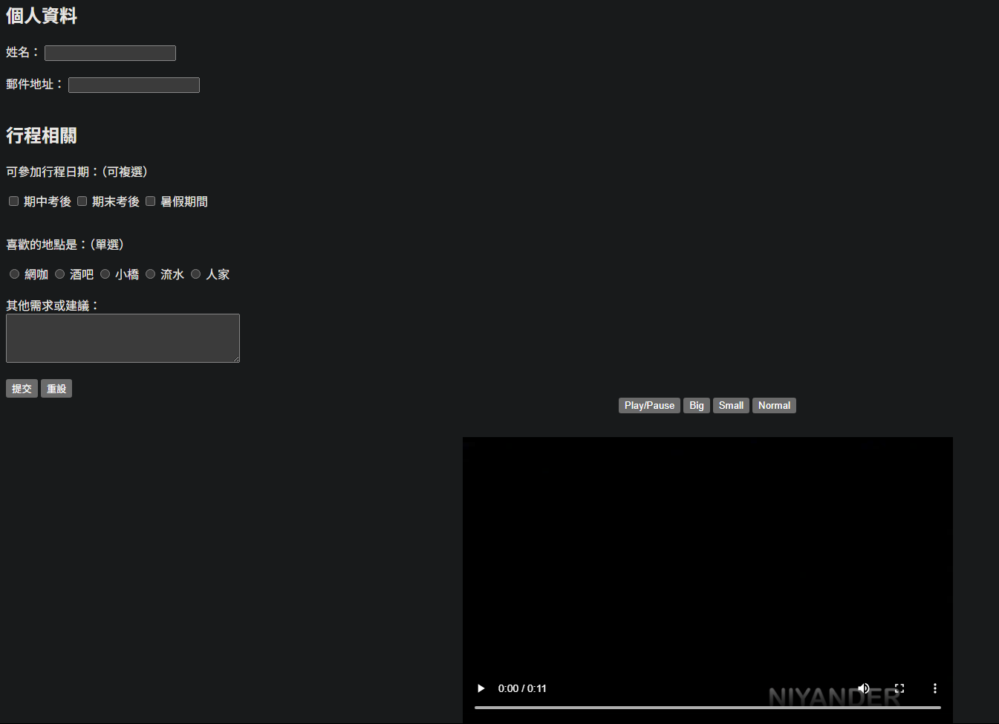
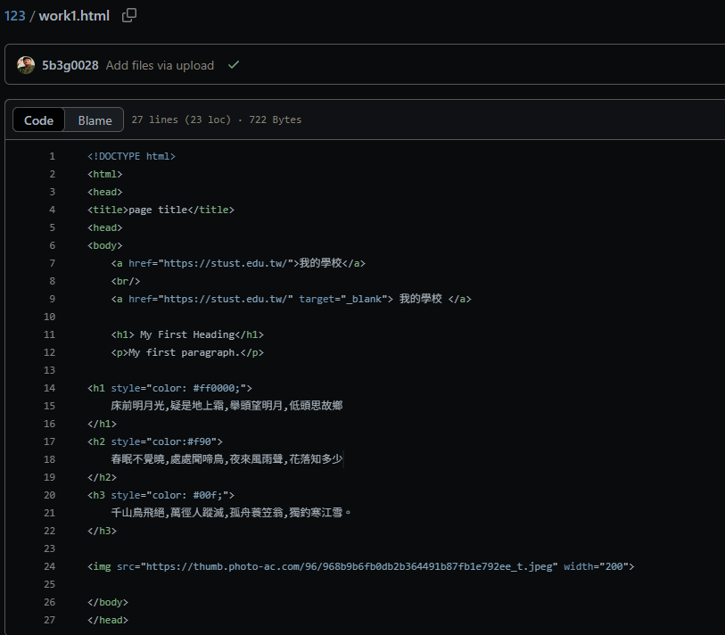

成果報告
自我介紹
自我報告
過程
心得
自我介紹
我是吳培愷是南台科技大學的學生，因為對電腦充滿興趣， 讓我開始對程式開發產生濃厚的好奇與熱情。 這學期的課程讓我學到了許多關與網頁相關的知識， 例如更多的 HTML、CSS 和 JavaScript，從中了解了網站是如何被設計與製作的， 對我未來的學習方向也有了更明確的目標。
自我報告
以口述說明
作品展示

選項設計，使用javascript做彈窗與選項

花朵介紹頁，加入圖片與說明，分頁連結

css排版 利用Flexbox排版

利用shadow做出陰影效果=

利用按鈕做簡易表單，外加選項，外部影片等

第一個html練習，做出簡單的外部連結橋墚，文字大小與顏色
過程
在這次網頁前端技術的學習中，我逐步掌握了 HTML、CSS 和 JavaScript 這三大核心技術。 從 HTML 的語義化結構入手，學會了如何清晰地建構網頁的核心骨架。 接著，我深入學習了CSS，這讓我能精確控制網頁的視覺呈現與佈局， 包括如何實現響應式設計，讓網頁在不同裝置上都能良好的操作。 透過 JavaScript 的學習，我為靜態網頁加入了互動性與生命力， 整個學習過程讓我對網頁前端開發有了全面且深入的認識， 不僅掌握了這些技術的語法與應用，更重要的是，培養了解決問題和將所學知識應用於實際創作的能力， 這為我未來的進一步學習奠定了堅實的基礎。
心得
回顧這門課程，我感到這是一段充滿啟發的旅程，它不僅讓我學會像建築師般構建網頁的骨幹結構， 更培養了我對其中視覺美感與排版藝術的敏銳度，那種將想法轉化為眼前網站的成就感，真的讓我對前端開發充滿了熱情； 也體認到一個好的前端是連結使用者與產品的橋樑，每一個細節都可能影響感受；因此，我對未來充滿期待， 希望能像魔術師一樣，創造出更流暢、更生動的動畫與互動效果， 同時提升效率，相信這將是我通往更精采前端世界的關鍵一步，讓我能打造出真正令人驚艷的網頁體驗。
學習過程
從完全不懂 HTML 開始，我逐步學會用結構標籤設計網頁內容， 接著掌握 CSS 來精確調整排版與顏色，最後運用 JavaScript 增加互動性， 讓網頁活起來。這是一段豐富且充滿挑戰的過程，也為我未來的程式設計之路奠定了堅實的基礎。
心得與反思
這門課程為我打開了網頁設計的大門，使我對網頁的整體結構與視覺美學有了全面且深入的理解。 透過課程的學習，我對 HTML、CSS、JavaScript 等前端核心技術的掌握度大幅提升，也深化了對前端開發實務的認知。 未來，我想更積極投入學習JavaScript，透過這框架的強大功能，進一步優化使用者介面的用戶體驗。 我的短期目標將是成為一名能結合技術力與設計感的全端設計師。
課程名稱：基礎網頁設計
姓名：吳培愷｜學號：5B3G0028
指導老師：劉毓芬｜日期：2025年6月